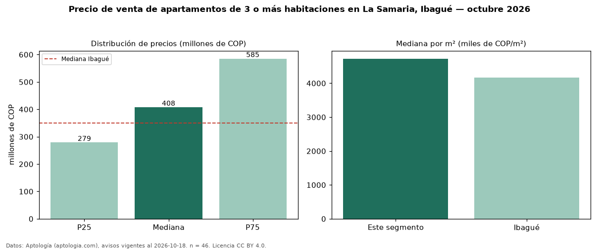

Precio de venta de apartamentos de 3 o más habitaciones en La Samaria, Ibagué — octubre 2026
COP 408 millones es el precio mediano de apartamentos de 3 o más habitaciones en venta en La Samaria, Ibagué (n = 46 avisos). Eso es 16 % por encima de la mediana de Ibagué para apartamentos de 3 o más habitaciones (COP 350 millones). Por metro cuadrado, la mediana es COP 4,72 millones/m² (n = 46 avisos con área), 13 % por encima de Ibagué (COP 4,17 millones/m²). Son 81 % de los 57 avisos de apartamentos en venta de la zona, cuya mediana general es COP 390 millones (+4 %). El área mediana anunciada es 84 m². La administración mediana declarada es COP 339.000 al mes (n = 42). La mitad central de los avisos va de COP 279 millones a COP 585 millones (razón 2,1), una dispersión alta. El estrato más frecuente es 4 (67 % de los avisos con estrato). Datos: Aptología (aptologia.com), CC BY 4.0 — https://www.aptologia.com/venta/ibague/la-samaria. Archivos: PDF, CSV con las cifras y gráfica PNG.

| Avisos únicos | 46 |
|---|---|
| Percentil 25 | COP 278.750.000 |
| Mediana | COP 407.500.000 |
| Percentil 75 | COP 585.000.000 |
| Mediana por m² | COP 4.724.702 |
Fuente: avisos vigentes de portales inmobiliarios recopilados por Aptología, deduplicados (mínimo 30 avisos únicos por celda). Precios pedidos, no cerrados. Fecha: 2026-10-18.